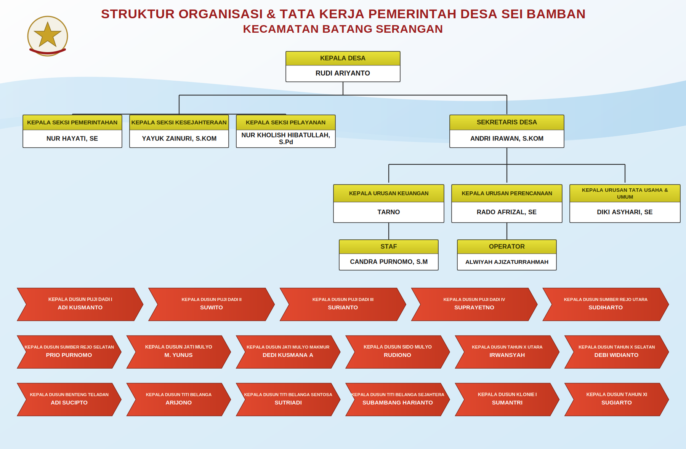

Visi Desa Sei Bamban
"Terwujudnya Desa Sei Bamban yang maju, mandiri, sejahtera, dan berkeadilan berlandaskan iman dan taqwa serta berwawasan lingkungan."
Misi Desa Sei Bamban

Desa Sei Bamban merupakan salah satu desa yang berada di wilayah Kecamatan Batang Serangan, Kabupaten Langkat, Provinsi Sumatera Utara. Nama "Sei Bamban" berasal dari nama sungai yang mengalir di kawasan ini, yang pada masa lalu dikenal sebagai sumber kehidupan dan identitas masyarakat setempat.
Seiring perkembangan zaman, Desa Sei Bamban terus berkembang menjadi desa yang mandiri dan produktif. Masyarakatnya mayoritas bermata pencaharian di bidang pertanian dan perkebunan, memanfaatkan potensi alam yang ada di sekitar wilayah desa.
Kantor Pemerintahan Desa Sei Bamban beralamat di Jl. Besar Batang Serangan, Dusun Titi Belanga. Desa ini terus berbenah dalam rangka meningkatkan kesejahteraan masyarakat serta mewujudkan tata kelola pemerintahan desa yang baik, transparan, dan akuntabel.
| Kecamatan | Batang Serangan |
| Kabupaten | Langkat |
| Provinsi | Sumatera Utara |
| Kode Pos | 20883 |
| Kode Desa | 1205192002 |
| UUtara | Kec. Batang Serangan |
| TTimur | Kab. Langkat |
| SSelatan | Kab. Langkat |
| BBarat | Kab. Langkat |